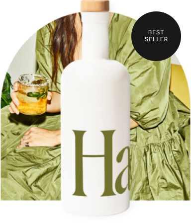
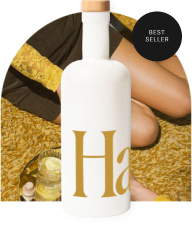

The Sampler Kit
Try a variety of Haus flavors with our customizable four-bottle kit. Each bottle serves 2-3 drinks.

Grapefruit Jalapeño
Light and refreshing, this aperitif is a bright blend of citrus with a subtle kick of fresh jalapeño.

Citrus Flower
A fresh Californian take on the apéritif. Made with crisp lemon and subtle elderflower.